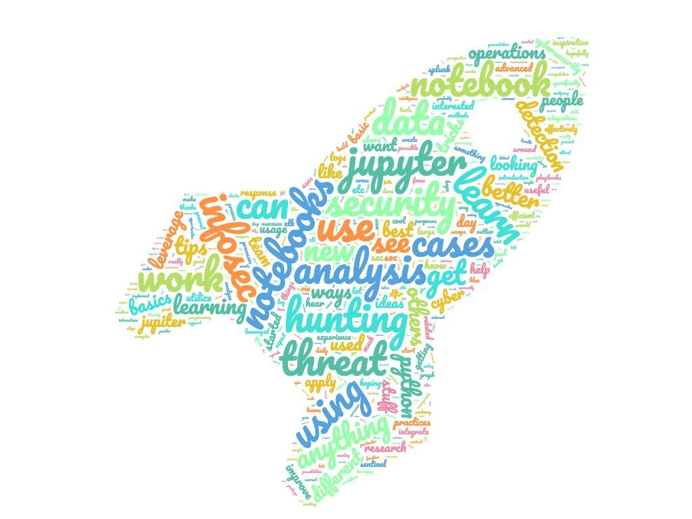
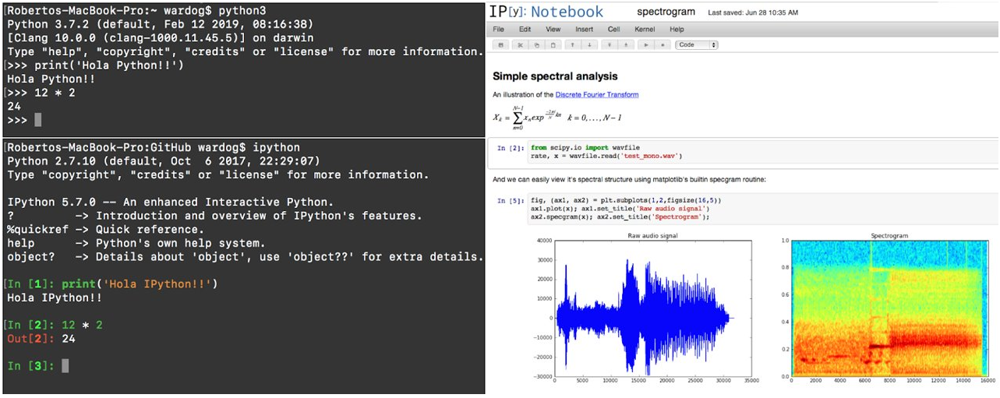
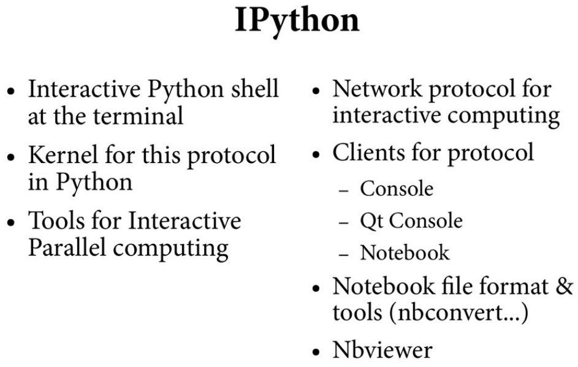
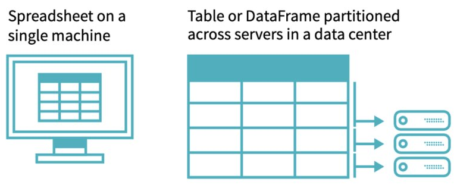

Welcome Infosec Community!¶

Roberto Rodriguez @Cyb3rWard0g¶

Microsoft Threat Intelligence Center (MSTIC) R&D
I ❤️ Open Source
Read > Blog > Tweet > Repeat!
Projects:
@HunterPlaybook 🏹
@THE_HELK
ATTACK-Python-Client
@OSSEM_Project
@Mordor_Project + Mordor Labs 😈
Blacksmith & More
Non-tech:
Blacksmithing!
Cooking Recipes: https://infosecwelldone.com/
Industry¶

Jupyter Notebooks Level¶

What do you exepect to learn about Jupyter Notebooks in this event?¶

What do you exepect to learn about Jupyter Notebooks in this event?¶

Housekeeping¶
📺 Recordings
Today’s event is being recorded.
Subscribe: https://bit.ly/OTRYouTubeSub
⏳ Timekeeping
Presentations from 10:00am - 8:00pm Eastern Time
Breaks:
11:35am -11:55am
2:45pm - 3:00pm
🎙️ Online Conversations
Slack #infosecjupyterthon
Automatic Invite: https://launchpass.com/threathunting
👍 Social Media
Twitter Handle: @jupyterthon
Hashtag: #infosecjupyterthon
We would like to know where you are joining us from! 🌎
Getting up to speed..¶

Getting up to speed..¶

What is Interactive Computing?¶
An Interactive computation is a persistent computer program that runs with a “human in the loop” where the primary mode of steering the program is through the human iteratively writing/running blocks of code and looking at the result.
Reference:https://www.youtube.com/watch?v=YKmJvHjTGAM&list=PL055Epbe6d5aP6Ru42r7hk68GTSaclYgi&index=29
Interactivity as a Protocol¶
Read-Evaluate-Print Loop (REPL):
Takes a single user’s inputs
Evaluates them
Returns the result to the user
A two-process model based on a kernel-client infrastructure
Kernel: Executes code
Client: Reads input and present output
IPython¶
Released on Dec 10, 2001 by Fernando Perez while he was a graduate student at the University of Colorado
IPython as we know it today grew out of the following three projects:
ipython by Fernando Pérez.
IPP by Janko Hauser.
LazyPython by Nathan Gray.
Reference: https://ipython.readthedocs.io/en/stable/about/history.html
 Reference: https://ipython.readthedocs.io/en/stable/interactive/python-ipython-diff.html
Fernando Perez Inspiration¶
Research with open tools for access and collaboration
Validated in SciPy India 2010 - Workshop to include students from underprivileged colleges in rural India.
Scientific
Business of science is to understand nature
Science is about opening up the black boxes nature
Community!
SciPy: Scientists collaborating and building better tools together!
Less competitions and more collaboration!
reference: https://www.youtube.com/watch?v=xuNj5paMuow&list=PL055Epbe6d5aP6Ru42r7hk68GTSaclYgi
IPython -> Jupyter Project¶


Reference: https://speakerdeck.com/fperez/project-jupyter?slide=5

Reference: https://speakerdeck.com/fperez/project-jupyter?slide=5
What are Jupyter Notebooks?¶
The Jupyter Notebook is an open-source web application that allows you to create and share documents that contain live code, equations, visualizations and narrative text. The Jupyter notebook combines two components:
A web application: a browser-based tool for interactive authoring of documents which combine explanatory text, mathematics, computations and their rich media output.
Notebook documents: a representation of all content visible in the web application, including inputs and outputs of the computations, explanatory text, mathematics, images, and rich media representations of objects.
Uses include:
Data cleaning and transformation
Statistical modeling
Data visualization
Machine learning, and much more
reference: https://jupyter.org/
Architecture (Interactive Protocol)¶

Installing Jupyter Notebooks (Manually)¶
Prerequisite: Python
While Jupyter runs code in many programming languages, Python is a requirement (Python 3.3 or greater, or Python 2.7) for installing the JupyterLab or the classic Jupyter Notebook.
Using Conda
conda install -c conda-forge notebook
Using PIP
pip install notebook
Once Jupyter Notebook is installed, you can run it with the following command:
jupyter notebook
Installing Jupyter Notebooks (Docker CE)¶
Prerequisite: Docker CE
You just have to install the community edition of Docker, so that you can pull and build ready-to-run Docker images containing Jupyter applications and interactive computing tools. You can use a stack image to do any of the following (and more):
Start a personal Jupyter Notebook server in a local Docker container
Run JupyterLab servers for a team using JupyterHub
Write your own project Dockerfile
Jupyter Docker Stacks: https://github.com/jupyter/docker-stacks
Jupyter Docker Base Image: https://hub.docker.com/r/jupyter/base-notebook/
docker run -p 8888:8888 jupyter/minimal-notebook:3b1f4f5e6cc1```
from IPython.display import YouTubeVideo
YouTubeVideo('KVR1_cVlLRE', width=1000, height=800)
Enter Binder Project¶
Released on May, 2016
Updated 2.0 on November, 2019
The Binder Project is an open community that makes it possible to create shareable, interactive, reproducible environments.
The main technical product that the community creates is called BinderHub, and one deployment of a BinderHub exists at mybinder.org.
Who is it for?:
Researchers, Educators, people analyzing data and people trying to communicate the data analysis to others!!
BinderHub¶
BinderHub connects several services together to provide on-the-fly creation and registry of Docker images. It utilizes the following tools:
A cloud provider such Google Cloud, Microsoft Azure, Amazon EC2, and others
Kubernetes to manage resources on the cloud
Helm to configure and control Kubernetes
Docker to use containers that standardize computing environments
A BinderHub UI that users can access to specify Git repos they want built
BinderHub to generate Docker images using the URL of a Git repository
A Docker registry (such as gcr.io) that hosts container images
JupyterHub to deploy temporary containers for users
BinderHub Flow¶

Let’s Try it!¶
I have a Notebook. Now What!¶
From a security perspective, there are a few basic things that you can start doing to start integrating notebooks to your research operations.
Connect to your favorite SIEMs
ELK (Elasticsearch)
Splunk
Azure Sentinel (Workspace)
Empower others in the infosec community and make your work reproducible
Mordor Project (@Mordor_Project)
Threat Hunter Playbook (@HunterPlaybook)
Connect to Elasticsearch (Elasticsearch DSL Libraries)¶
Pre-requisites:
pip install elasticsearch
pip install pandas
pip install elasticsearch-dsl
Import the following libraries
from elasticsearch import Elasticsearch
from elasticsearch_dsl import Search
import pandas as pd
Connect to Elasticsearch (Elasticsearch DSL Libraries)¶
Initialize an Elasticsearch client using a specific Elasticsearch URL. Next, you can pass the client to the Search object that we will use to represent the search request in a little bit.
es = Elasticsearch(['http://<elasticsearch-ip>:9200'])
searchContext = Search(using=es, index='logs-*', doc_type='doc')
Connect to Elasticsearch (Elasticsearch DSL Libraries)¶
In addition, we will need to use the query class to pass an Elasticsearch query_string . For example, what if I want to query event_id 1 events?.
s = searchContext.query('query_string', query='event_id:1')
Connect to Elasticsearch (Elasticsearch DSL Libraries)¶
Finally, you can run the query and get the results back as a DataFrame
if response.success():
df = pd.DataFrame((d.to_dict() for d in s.scan()))
df
Connect to Elasticsearch (Elasticsearch DSL Libraries)¶

Connect to Elasticsearch (HuntLib Library @DavidJBianco)¶
Pre-requisites:
pip install huntlib
Import the Elastic Dataframe class and create a plaintext connection to the Elastic server, no authentication.
from huntlib.elastic import ElasticDF
e = ElasticDF(
url="http://localhost:9200"
)
Reference: https://github.com/target/huntlib
Connect to Elasticsearch (HuntLib Library @DavidJBianco)¶
A more complex example, showing how to set the Elastic document type, use Python-style datetime objects to constrain the search to a certain time period, and a user-defined field against which to do the time comparisons. The result size will be limited to no more than 1500 entries.
df = e.search_df(
lucene="item:5285 AND color:red",
index="myindex-*",
doctype="doc", date_field="mydate",
start_time=datetime.now() - timedelta(days=8),
end_time=datetime.now() - timedelta(days=6),
limit=1500
)
Reference: https://github.com/target/huntlib
Connect to Splunk (HuntLib Library @DavidJBianco)¶
The SplunkDF class search Splunk and returns the results as a Pandas DataFrame. This makes it easier to work with the search results using standard data analysis techniques. Establish a connectio to the splunk server
from huntlib.splunk import SplunkDF
s = SplunkDF (
host=splunk_server,
username="myuser",
password="mypass"
)
Reference: https://github.com/target/huntlib
Connect to Splunk (HuntLib Library @DavidJBianco)¶
Time bounded search using Splunk notation.
df = s.search_df(
spl="search index=win_events EventCode=4688",
start_time="-2d@d",
end_time="@d"
)
Reference: https://github.com/target/huntlib
Dataframes?¶
DataFrame is a 2-dimensional labeled data structure with columns of potentially different types.
You can think of it like a spreadsheet or SQL table

Connect to Azure Sentinel (MSTICpy)¶
Import libraries
import os
import pandas as pd
from msticpy.nbtools.wsconfig import WorkspaceConfig
from msticpy.data.data_providers import QueryProvider
os.environ["KQLMAGIC_LOAD_MODE"]="silent"
Connect to Azure Sentinel (MSTICpy)¶
Define connection string. We are going to authenticate to our demo workspace with an AppKey. Therefore, there is no need for you to pass an azure account or authenticate with your credentials! This is a great demo environment to test your notebooks!
connect_str = f"loganalytics://workspace='DEMO_WORKSPACE';appkey='DEMO_KEY';alias='myworkspace'"
qry_prov = QueryProvider("LogAnalytics")
qry_prov.connect(connect_str)
Native Kqlmagic interface¶
See https://github.com/Microsoft/jupyter-Kqlmagic
%kql SecurityEvent | take 1
MSITCPy query interface¶
alerts_df = qry_prov.exec_query("""
SecurityAlert
| take 10
""")
print(type(alerts_df))
alerts_df.head(5)
Send queries of arbitrary complexity (using %%kql or msticpy)¶
events_df = qry_prov.exec_query("""
SecurityEvent
| where TimeGenerated between (ago(1d) .. now())
| summarize EventCount=count() by EventID
""")
display(events_df.head(5))
events_df.plot.bar(x="EventID")
Simple parameterization of queries¶
from datetime import datetime, timedelta
param_query = """
SecurityEvent
| where TimeGenerated between (datetime({start}) .. datetime({end}))
| summarize EventCount=count() by EventID
"""
end = datetime.utcnow()
start = end - timedelta(3)
events_df = qry_prov.exec_query(
param_query.format(start=start, end=end)
)
display(events_df.head(5))
events_df.plot.scatter(x="EventID", y="EventCount", figsize=(15, 4), s=50, c="EventCount", colormap="viridis")
Building an Infosec Community around Jupyter Notebooks¶
How can I expedite collaboration in the Infosec community and allow anyone in the 🌎 to use the notebooks I build and also the datasets to reproduce my research?
Threat Hunter Playbook (@HunterPlaybook)
Mordor Project (@Mordor_Project)
Enter Jupyter Book¶
Jupyter Book is an open source project for building beautiful, publication-quality books and documents from computational material.

Resources¶
https://the-turing-way.netlify.app/introduction/introduction.html
https://mail.python.org/pipermail/python-list/2001-December/093408.html
https://blog.jupyter.org/rendering-notebooks-on-github-f7ac8736d686
https://blog.jupyter.org/binder-2-0-a-tech-guide-2017-fd40515a3a84
https://elifesciences.org/labs/a7d53a88/toward-publishing-reproducible-computation-with-binder